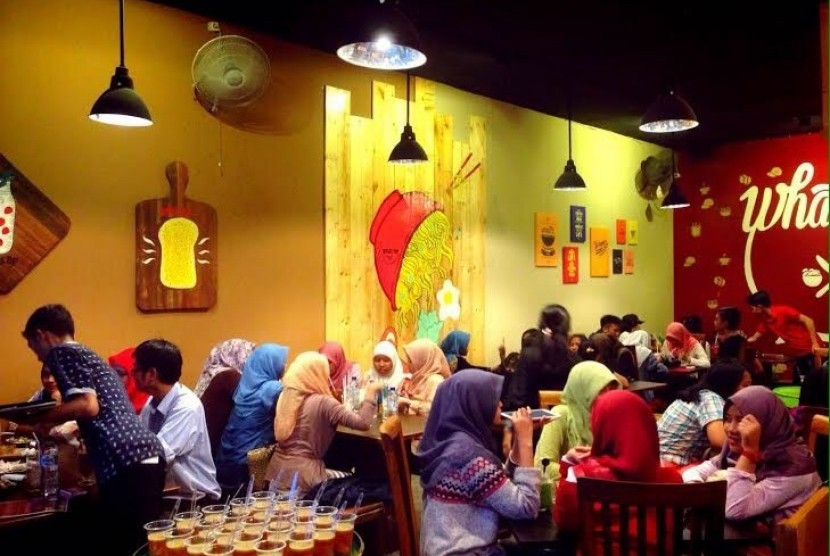

Detail Wisata Kuliner WhatsUp
Gallery Foto

Deskripsi Fasilitas
parkiran mobil dan motorluas dan tempatnya nyaman dan tidak sempit. Pilihan makanan banyak dengan rasa yang sangat enak. Tidak akan menyesal jika datang kesini.
Alamat & Peta Lokasi
Jl. Margonda Raya No.463, Pondok Cina, Kecamatan Beji, Kota Depok, Jawa Barat 16424
Testimony & Komentar
Raffi Ahmad
whats up ini salah satu cafe kekinian di daerah beji, depok. Tempatnya cukup besar juga, no ac, jadi terbuka gitu, interiornya lumayan lucu
Mohammad Idris
Presentasi indomie ini ditaro di hot plate. Kalau rasa sih sebenarnya biasa banget, cuma menang di beef nya aja dan membuat harga indomie ini menjadi tinggi dibanding indomie lainnya.
Dian Nugrahwati
Kalo di whatsupp ini si ga mengecewakan. Semua serba murah ya terjangkaulah makanannya juga ga dikit sesuai sama porsinya si perut.